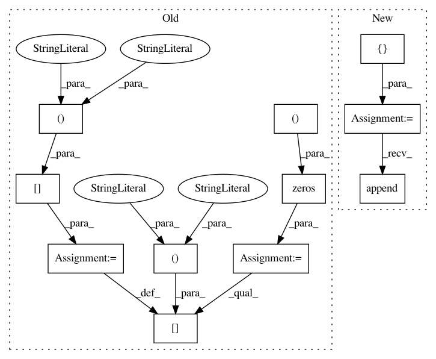

5c8dbdda60bc0290e967c37a55f47ba3e4342882,basenji/dataset.py,SeqDataset,numpy,#SeqDataset#Any#Any#,188
Before Change
// initialize inputs and outputs
seqs_1hot = np.zeros((self.num_seqs, self.seq_length, self.seq_depth))
targets = np.zeros((self.num_seqs, self.target_length, self.num_targets))
// collect inputs and outputs
si = 0
for seq1_1hot, targets1 in dataset:
if return_inputs:
seqs_1hot[si,:,:] = seq1_1hot[0,:,:]
if return_outputs:
targets[si,:,:] = targets1[0,:,:]
si += 1
assert(si == self.num_seqs)
// return
After Change
// initialize inputs and outputs
seqs_1hot = []
targets = []
// collect inputs and outputs
for seq_raw, targets_raw in dataset:
if return_inputs:
seq_1hot = seq_raw.numpy().reshape((self.seq_length,-1))
seqs_1hot.append(seq_1hot)
if return_outputs:
targets1 = targets_raw.numpy().reshape((self.target_length,-1))
targets.append(targets1)
// make arrays
seqs_1hot = np.array(seqs_1hot)
targets = np.array(targets)
In pattern: SUPERPATTERN
Frequency: 3
Non-data size: 11
Instances
Project Name: calico/basenji
Commit Name: 5c8dbdda60bc0290e967c37a55f47ba3e4342882
Time: 2019-09-29
Author: drk@calicolabs.com
File Name: basenji/dataset.py
Class Name: SeqDataset
Method Name: numpy
Project Name: dmlc/gluon-cv
Commit Name: ee602b6f68f0bdd19f449a86955697f8f0a2d54c
Time: 2019-09-21
Author: yizhu59@gmail.com
File Name: gluoncv/data/transforms/video.py
Class Name: VideoCenterCrop
Method Name: forward
Project Name: dmlc/gluon-cv
Commit Name: ee602b6f68f0bdd19f449a86955697f8f0a2d54c
Time: 2019-09-21
Author: yizhu59@gmail.com
File Name: gluoncv/data/transforms/video.py
Class Name: VideoMultiScaleCrop
Method Name: forward